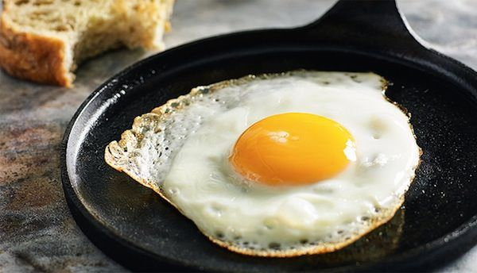

Ingredientes e Utensílios
-
1 Ovo - De preferência caipira para mais sabor.
-
1 colher de chá de manteiga ou azeite - Para dar aquele toque especial.
-
Sal e pimenta - A gosto.
-
1 frigideira antiaderente - Essencial para não grudar.
Passo a Passo
-
Aqueça a frigideira: Coloque a frigideira em fogo médio e adicione a manteiga ou azeite.
-
Quebre o ovo: Com cuidado, quebre o ovo e coloque-o na frigideira.
-
Tempere: Salpique sal e pimenta sobre o ovo enquanto ele frita.
-
Cozinhe a gosto: Fritar por cerca de 2-3 minutos para uma gema mole, ou mais tempo para uma gema mais dura.
-
Sirva: Retire o ovo com uma espátula e sirva imediatamente!
